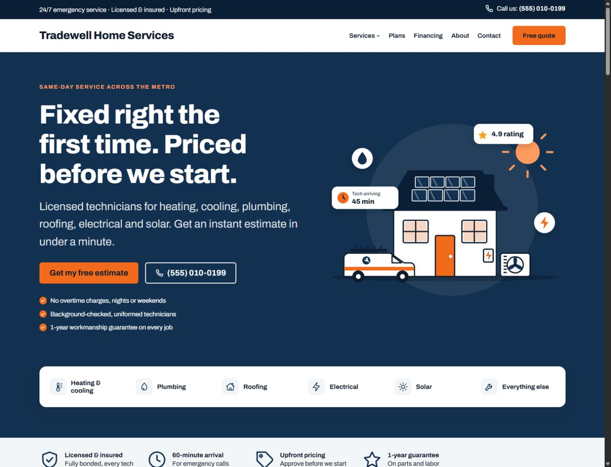
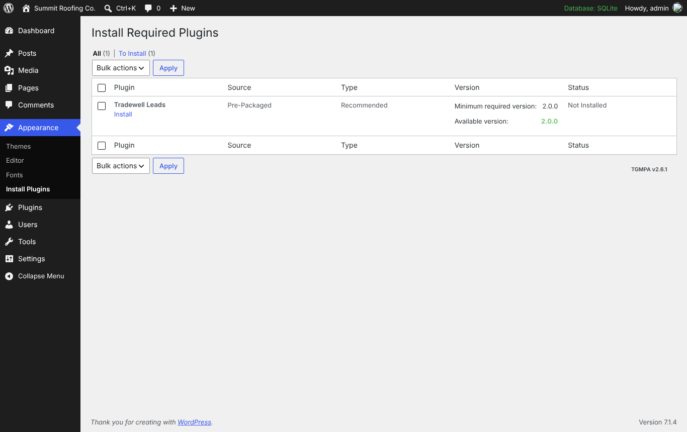
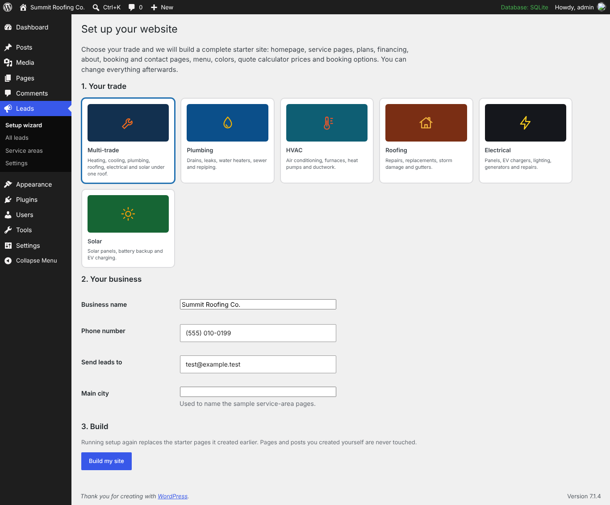
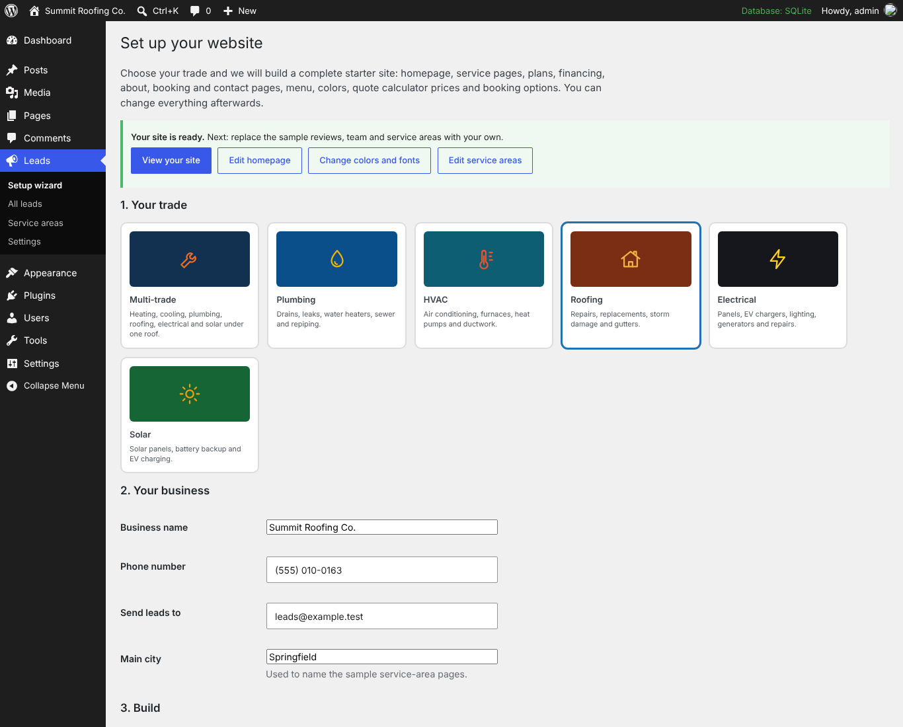
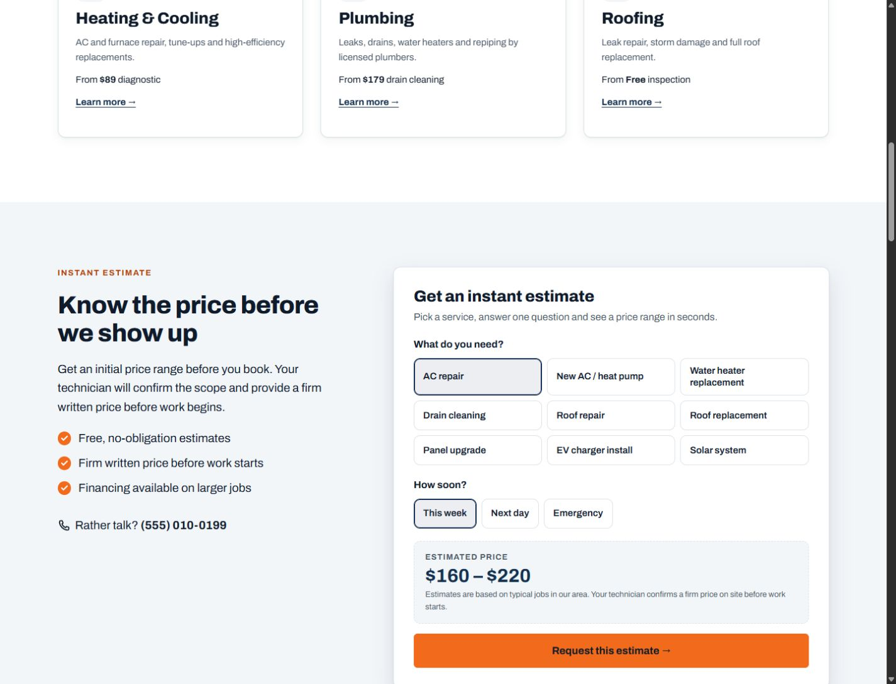
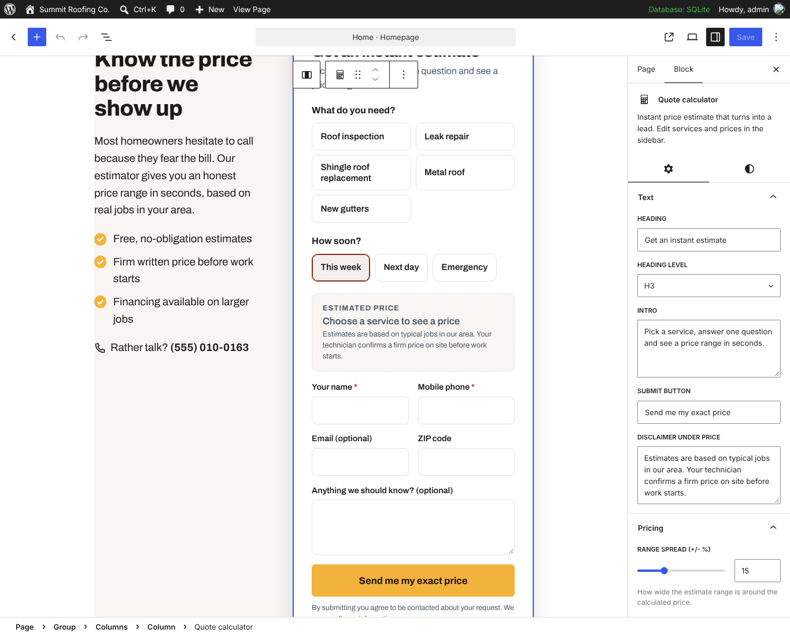
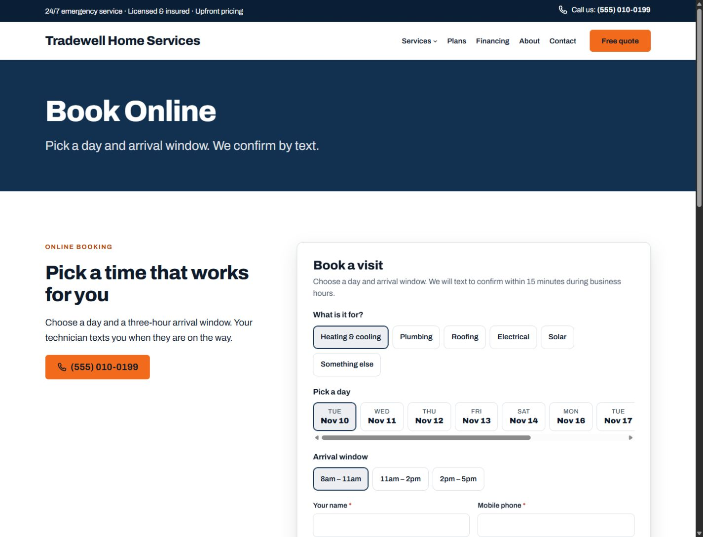
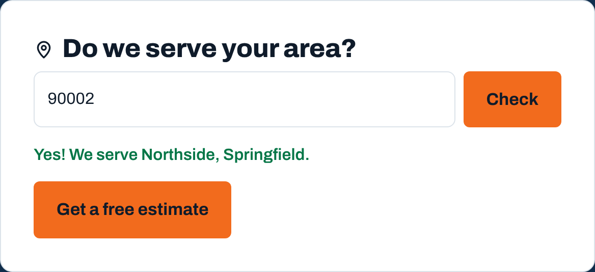
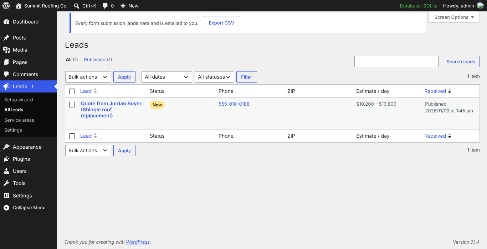
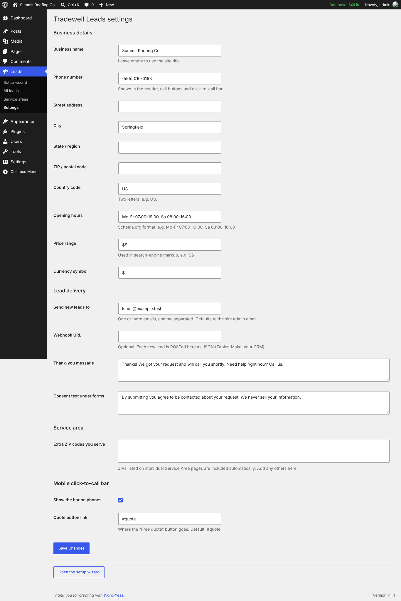

Tradewell documentation
Published by Prosper Technologies. Version 2.0.1. Product support and issue reports.
Thank you for choosing Tradewell, a lead-generating WordPress theme for HVAC, plumbing, roofing, electrical and solar businesses. This guide takes you from upload to a finished site in about ten minutes.

1. Getting started
Requirements
- WordPress 6.6 or newer (tested up to 7.1)
- PHP 7.4 or newer
- A host that can send email (or an SMTP plugin, see Troubleshooting)
What is in your download
| File | What it is |
|---|---|
tradewell.zip | The theme. Upload this in WordPress. It recommends Tradewell Leads and offers to download and install it with your permission. |
tradewell-child.zip | Optional child theme for custom code. |
plugins/tradewell-leads.zip | The included plugin ZIP for manual or offline installation. |
documentation/ | This guide. |
licensing/ | License information for the theme and bundled resources. |
Upload tradewell.zip, not the whole download. Uploading the main download file gives a "The package could not be installed" error.
2. Install the theme
- In WordPress go to Appearance › Themes › Add New › Upload Theme.
- Choose
tradewell.zipand click Install Now, then Activate.
3. Install Tradewell Leads
After activation a notice appears at the top of the dashboard. Click Begin installing plugin (or go to Appearance › Install Plugins) and install Tradewell Leads. After installation, activate it if WordPress shows an Activate link. The installer requires an internet connection to GitHub. If downloading is blocked, install plugins/tradewell-leads.zip using Plugins › Add New › Upload Plugin.

The plugin adds the quote calculator, booking form, service-area pages, click-to-call bar, leads inbox and setup wizard. The theme works without it; those sections simply do not appear.
4. Setup wizard
When the plugin is activated, the setup wizard opens. You can return to it any time at Leads › Setup wizard.

- Choose your trade: Multi-trade, Plumbing, HVAC, Roofing, Electrical or Solar.
- Enter your business details: name, phone, the email that should receive leads, and your main city.
- Click Build my site.
The wizard creates and connects:
- A homepage with your trade's headline, services, quote calculator, offers, service areas, reviews, plans, FAQ and emergency banner
- A Services page plus three service pages for your trade, each with its own starting price
- Maintenance Plans, Financing, About, Book Online, Contact and News pages
- The main menu, the footer, the color scheme for your trade, calculator prices and booking options
- Four sample service-area pages

Back up your site before rebuilding or removing starter content. These actions permanently delete the imported pages, including edits you made to them, and replace the imported navigation and templates. Pages and posts created separately are kept.
Before launch: replace the sample reviews, team members, offers, statistics and service areas with your own. The sample reviews are placeholders and must not be presented as real customer reviews.
5. Colors, fonts and logo
- Color scheme: Appearance › Editor › Styles. Pick one of six schemes or set your own colors. Illustrations recolor automatically.
- Logo: Appearance › Editor › Patterns › Header, select the Site Logo block and upload your logo. Or add it under Settings › General if your WordPress version shows it there.
- Fonts: Styles › Typography. Tradewell ships with Archivo (self-hosted, no Google requests).
The color palette uses named roles, so you only need to change a few:
| Color | Used for |
|---|---|
| Primary / Primary dark | Hero, page headers, icons, footer |
| Accent / Text on accent | Buttons, coupons, emergency banner. Keep these two readable together. |
| Accent text | Small labels on white backgrounds |
| Highlight on dark | Small labels and numbers on dark backgrounds |
6. Pages, sections and templates
Edit imported homepage sections under Pages › Home › Edit. Edit the header, footer and global styles in Appearance › Editor. Without an import, the theme uses WordPress's normal latest-posts view and honours Settings › Reading.
Every section is a block pattern. In any page click + › Patterns › Tradewell (or Lead capture) to add one.
| Theme patterns | Plugin patterns |
|---|---|
| Hero with illustration, Trust bar, Services grid, Special offers (coupons), How it works, Stats band, Maintenance plans, Financing, Customer reviews, Team, About: our story, Service detail, Contact details, FAQ, Emergency call to action | Quote calculator section, Booking section, Service area section |
Page templates
- Default: page header and content area
- Full-width page: page header, then edge-to-edge sections (used by the wizard)
- Landing page: no navigation, just logo, phone and content, for ad campaigns
The text under a page title comes from the page excerpt (Page settings › Excerpt).
7. Quote calculator

Visitors pick a service, optionally set a size and urgency, and see a price range. To request a follow-up they leave their name and phone, which creates a lead. The estimate is indicative, not a binding quotation. Your team must confirm scope, availability and final pricing.

How prices are calculated
price = (base price + size × price per unit) × urgency range = price − spread % to price + spread % (rounded to friendly numbers)
- Flat-price services: leave "Size unit" empty. Only the base price is used.
- Size-based services: set a unit (sq ft, tons, kW, fixtures), price per unit, minimum, maximum, step and starting size. A slider appears.
- Urgency: "Next day" adds 10%, "Emergency" adds 25%. Turn this off with "Ask how soon".
- Range spread: how wide the range is (default ±15%).
The estimate shown to the visitor is saved with the lead so your team knows what they expect.
8. Booking form

Customers choose a service, a day and an arrival window. In the block sidebar set the services and windows (one per line), how many days to offer and which days you are closed. Bookings are requests: confirm them by phone or text.
9. Service areas and ZIP checker

- Add a page per town at Leads › Service areas › Add service area. Enter the ZIP codes it covers in the "ZIP codes covered" box.
- The pages appear at
/service-areas/and in the Service area list block. - Extra ZIP codes without their own page go in Leads › Settings › Service area.
- When a ZIP is not covered, the checker shows a short "call me" form so you still capture the lead.
10. Phone button and click-to-call bar
Set your number once in Leads › Settings. It updates the header, footer, buttons and the mobile call bar everywhere. The call bar shows on phones only; turn it off or change where "Free quote" links in the same settings screen.
11. Leads inbox, email and webhook

- Every submission is saved under Leads and emailed to the address in settings. The email's Reply-To is the customer.
- Track each lead as New, Contacted, Booked, Won or Lost. The menu shows how many are new.
- Export CSV downloads all leads for your spreadsheet or CRM.
- Webhook: paste a Zapier, Make or CRM webhook URL in settings and each lead is sent there as JSON.

Spam protection
Forms use a hidden honeypot field, a signed time check (submissions faster than 3 seconds are rejected) and a limit of 6 submissions per visitor per 10 minutes. No CAPTCHA is bundled. Set your page cache lifetime below 14 days because signed form tokens expire; reload a page if a token has expired. Add a host-level anti-spam service if your site receives sustained abuse.
12. Conversion tracking
No analytics service is bundled. If you connect a tag manager or advertising service, configure visitor consent and disclosures before enabling that service. Do not add names, phone numbers, email addresses, street addresses or other personal information to analytics payloads.
If Google Tag Manager is installed, these events are pushed to dataLayer. Use them as triggers for Google Ads, GA4 or Meta conversions.
| Event | When | Data |
|---|---|---|
tradewell_lead | Any form submitted successfully | lead_type, service, value (top of estimate) |
tradewell_call | A phone link is tapped | from |
tradewell_quote_step | Visitor requests an estimate | service |
tradewell_area_check | ZIP checked | served only; the ZIP is not included in analytics events |
13. SEO and structured data
Tradewell Leads adds LocalBusiness (HomeAndConstructionBusiness) structured data to the homepage and service-area pages, using the details in Leads › Settings. If your SEO plugin already outputs business markup, turn ours off:
add_filter( 'twleads_output_schema', '__return_false' );
Use an SEO plugin of your choice for titles and meta descriptions.
14. Privacy
The leads inbox and CSV export are restricted to administrators. Configure a retention policy and remove leads when no longer needed. Do not paste customer details into public support issues. The plugin does not send telemetry to Prosper Technologies.
Leads contain personal data. Tradewell Leads registers with WordPress's privacy tools (Tools › Export / Erase Personal Data) and suggests text for your privacy policy (Settings › Privacy). Edit the consent line under forms in Leads › Settings.
15. Child theme
If you plan to add custom code, install tradewell-child.zip and activate it instead of Tradewell (both must be installed). Put CSS in the child's style.css and PHP in its functions.php. Changes made in the Site Editor are stored in the database and survive updates without a child theme.
16. Translation
Both the theme and plugin are translation ready. Template files are in tradewell/languages/tradewell.pot and tradewell-leads/languages/tradewell-leads.pot. Use Loco Translate or Poedit.
The wizard fills in trade-specific text in the site's language when translations exist; otherwise it uses English.
17. Troubleshooting
Lead emails are not arriving
Many hosts block PHP mail. Install an SMTP plugin (for example WP Mail SMTP) and connect it to your email provider. Successfully accepted submissions are saved in the inbox independently of email delivery. Test delivery before launch and monitor your mail provider.
"The package could not be installed. The theme is missing the style.css stylesheet."
You uploaded the full download. Unzip it and upload tradewell.zip.
/service-areas/ shows a 404
Go to Settings › Permalinks and click Save once.
The menu shows "Sample Page"
Run the setup wizard, or edit the navigation block in Appearance › Editor › Navigation.
"Too many requests" when testing forms
The spam limit allows 6 submissions per 10 minutes per visitor. Wait 10 minutes, or raise it while testing with add_filter( 'twleads_rate_limit', fn() => 50 );
18. Developer reference
| Hook | Type | Use |
|---|---|---|
twleads_lead_created | action | Runs after a lead is stored. Receives $lead_id, $data. |
twleads_lead_errors | filter | Add or remove validation errors. |
twleads_webhook_payload | filter | Change the JSON sent to your webhook. |
twleads_rate_limit | filter | Submissions allowed per visitor per 10 minutes (default 6). |
twleads_show_callbar | filter | Hide the call bar on specific pages. |
twleads_schema / twleads_output_schema | filter | Edit or disable structured data. |
tradewell_disable_emoji | filter | Return false to restore WordPress's emoji script. |
REST endpoints: POST /wp-json/twl/v1/leads and GET /wp-json/twl/v1/areas?zip=.
19. Credits and changelog
Theme and plugin code, CSS, icons and illustrations are GPL v2 or later. The bundled Archivo font retains its SIL Open Font License. Third-party copyright and license notices are included in the download.
- Archivo font, SIL Open Font License 1.1, The Archivo Project Authors
- TGM Plugin Activation, GPLv2 or later, Thomas Griffin, Gary Jones, Juliette Reinders Folmer
- Icons and illustrations: original artwork, GPLv2 or later
2.0.1
- Prosper Technologies branding and consistent GPL licensing.
- Refined responsive hero, service labels and mobile navigation spacing.
- Fixed parent stylesheet loading in the child theme and quote links on subdirectory installations.
- Strengthened lead permissions, malformed-input handling, booking dates, webhook requests and privacy pagination.
- Updated translation catalogs and documentation.
2.0.0
- Setup wizard with six trade starter sites
- Original illustrations that recolor with each scheme
- New patterns: offers, plans, stats, financing, team, about, service detail, contact details, page header
- Bundled plugin installer
- Accessibility, HTML validity and coding-standard improvements
1.0.0
- Initial release